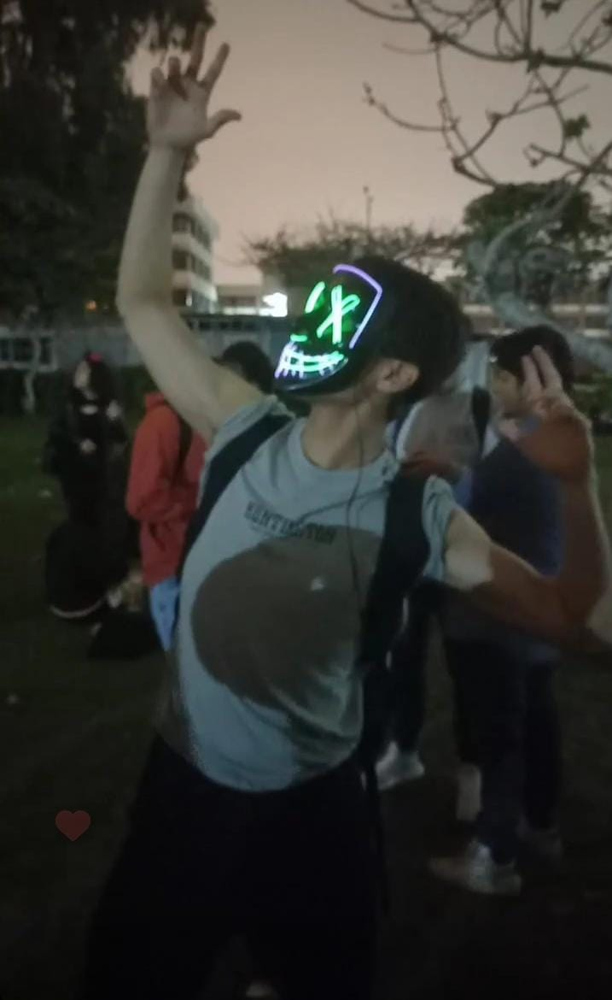
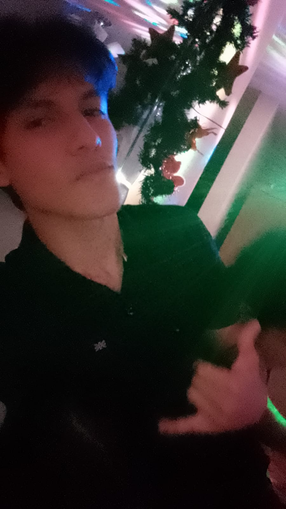
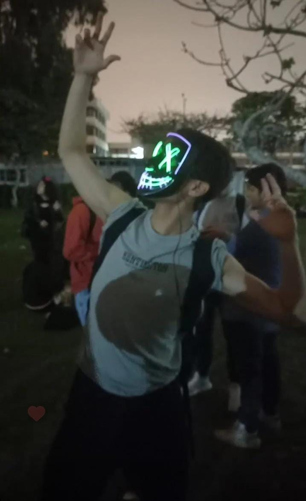
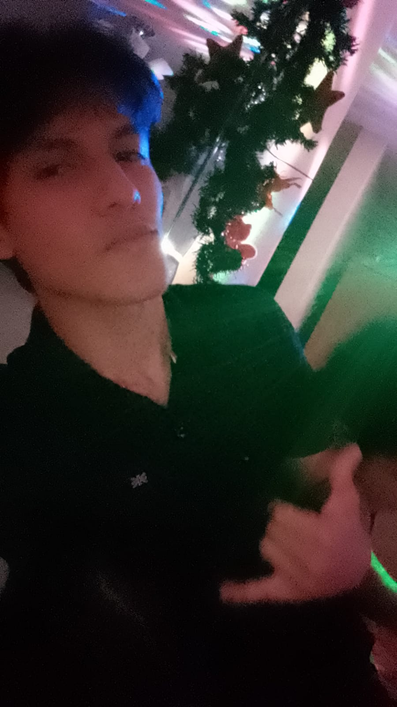

Mi nombre es Enrique Julca Delgado soy estudiante de la UNMSM (Universidad Nacional Mayor de San Marcos) en la Facultad de Ciencias Matemáticas Base 22. Mi especialidad es computación científica lo que básicamente significa matemática aplicada esto engloba resolver problemas de ingenieria (reales) de diversas ramas mediante la Programación. Sin embargo, tengo una afinidad muy grande hacia temas nétamente de ciencias de la computación como puede ser el cálculo lambda o teoría de la computación, además me gusta aprender nuevas tecnologías. Mis intereses actuales son el desarollo backend y tengo como objetivo este año empezar a trabajar en esa rama.
Sobre mis logros en mi vida universitaria puedo mencionar siempre mantenerme en los primeros puestos sin mucho esfuerzo, cosa que en sí considero una desventaja ya que como diría siempre ... "La comodidad es la sombra de la autoexigencia; solo en la incomodidad hallamos el crecimiento real". Tener esta mentalidad no solo te ayudará a ti, además hará crecer a tu entorno
 


